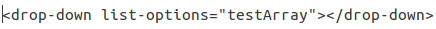

Custom AngularJS directive for a dropdown list.
To Download go to My GitHub Repo.
Alternatively, you could clone the project using---
git clone https://github.com/SubhajitSC/angulardddirective.git
Usage
Add required directive JS file in index.html
Add "custom-directive-dropdown" as dependency in app.js file
Use  in view where needed
Data
The Data Set must be an array of objects.
Below is a sample: